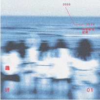

2025 • 3 tracks • 46 min
“羈絆 陪伴 歡笑 友情 親情 不同交織的情感“
click to play music
羈絆
陪伴 歡笑 友情 親情不同交織的情感
交雜 錯綜 組成所有羈絆
這一次我想記住所有
是那個下午 熟悉的聲音 清澈且單純的我們
用一個真心去交流 是玩笑 嬉鬧 那些美好的瞬間 依稀模糊
聲音 都記得
bond
Companionship, laughter, friendship, and family are intertwined emotions
Mixed and intricate, forming all the bonds
This time I want to remember all
It was that afternoon, the familiar voice, the clear and pure us
Communicate with a sincere heart
It was a joke, a frolic, those beautiful moments are vaguely blurred
Sound
Remember all